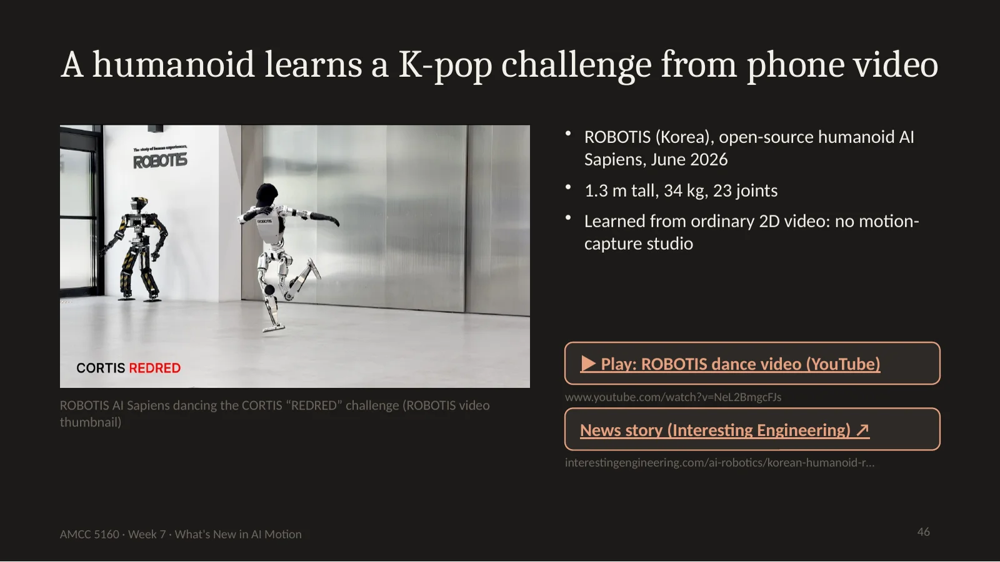

Good evening, everyone, and welcome to Week 7. Last week Yaofu showed us how quantization makes models run faster on smaller machines. Tonight is different from every other lecture so far. There is no taxonomy and no list of techniques. Instead I will tell you four stories, all of which happened between March and September of this year, and every one of them is about motion: how long a generated video can move, who decides how it moves, whether that motion can leave the screen, and what happens when the tool you used to make it disappears. Each story comes with a demo and a question for you to argue about.
Here is the map for tonight. Story one: the five-second clip is over. The leading models now generate thirty seconds in one pass, and a research model generates a full minute faster than you can watch it. Story two: music becomes the choreographer. In July, Alibaba released an open model that turns a song and one photo into a minute of dance. Story three: motion leaves the screen. In June, a Korean robotics company taught a humanoid robot a viral K-pop dance using only phone video. Story four: Sora is gone. OpenAI closed the Sora app in April and switched off the API three weeks ago. Between stories two and three we'll have student presentations and a break, and we'll end with a debate.
Before the new material, a thirty-second recap, because tonight connects to almost everything we've done. In Week 1 we went from neurons to a full AI filmmaking workflow. Weeks 2 and 3 opened up editing and the generator itself: seeds, guidance and why a model produces what it produces. Week 4 was video and art filmmaking. Week 5 asked who owns a model you adapt. And last week Yaofu showed how quantization makes models faster and cheaper. Tonight's four stories pull on three of those threads at once: how long a video can be, how fast it can be made, and who gets credit for what it shows.
Let's start with a clip. This is the hero video on ByteDance's official Seedance 2.5 page. Watch it once, and count the cuts. Then tell me: how many times do you think the model was run to make it? Take a guess with your neighbour. [Play the video.] The answer is: the model is built to make up to thirty seconds in a single generation, with camera moves and blocking inside it. A year ago, anything like this was ten or more separate five-second clips stitched together by an editor. Keep that number, thirty seconds, in your head. It is the first story.
Why teach the news? Because the best courses do. Stanford's CS348K this spring, taught by Kayvon Fatahalian, gave a whole lecture to how distillation and caching made autoregressive video models run in real time, and brought in guests from WorldLabs, Roblox and NVIDIA. Jun-Yan Zhu's CMU course put a fast video paper from the same year on its reading list, and ended with forensics and data attribution. MIT's architecture course last fall listed Sora as the video tool in its syllabus, which matters for story four. And Holly Willis at USC pairs every tool with the controversy around it, which is exactly what our 'for the room' questions do tonight.
Story one. For most of the last two years, an AI video was about five seconds long. That limit shaped everything: how people wrote prompts, how they edited, even what kinds of films they made. This year the limit broke.
Here is the change in four numbers. In 2024, a typical clip was about five seconds. Early this year, ByteDance's Seedance 2.0 got to about fifteen. By this summer, three commercial models, Seedance 2.5, Alibaba's Wan 3.0 and Kuaishou's Kling 4.0, were announced or released at thirty seconds in one pass. And a research model from Peking University and ByteDance, called Helios, makes about a minute, and it makes it faster than real time. Thirty seconds is long enough for a whole scene: an entrance, an exchange, an exit. So the unit of AI video is no longer the shot. It is the scene.
Who shipped what. ByteDance launched Seedance 2.5 on July 31st; its official page says it is built for thirty-second storytelling, with camera movement and performance blocking. Alibaba opened a public beta of Wan 3.0 in August, at thirty-second clips, but with no open weights this time. Kuaishou opened early access to Kling 4.0 Flash on September 28th, at twenty seconds and 720p, and has announced the full model for this month. And Helios, from Peking University and ByteDance, came out in March as open weights. One caution: vendors publish few specs, so some of these numbers come from reviewers. Treat them as this month's numbers, not as facts that will last.
Why was five seconds the wall for so long? Three reasons. First, frames: at twenty-four frames per second, five seconds is a hundred and twenty frames; thirty seconds is seven hundred and twenty, six times as many. Second, attention. Remember from Week 3 that a transformer compares every piece of the video with every other piece. Six times the pieces means roughly thirty-six times the comparisons. That is a rule of thumb, and real systems use many tricks, but it explains why length was expensive. Third, errors pile up: the longer the video, the more chances for a small mistake to grow.
There are two broad ways to make a long video. One is all at once: the model denoises every frame of the clip together, which keeps the clip consistent but gets expensive fast, and you wait until the whole thing is done. The other is forward in time, called autoregressive: the model writes the next chunk based on the chunks before it, exactly as a language model writes the next word. That lets you stream video and even run in real time, but it has to fight drift, because any error is carried forward. Helios is the second kind.
Now we go under the hood for about ten minutes. Everything in this technical section is taught at top universities this year, so here is where you can go deeper. MIT's 6.S184 builds a latent diffusion model from scratch with flow matching, and ends with a case study of large video generators. Stanford's CS348K had a lecture this May called 'Performance optimizations for autoregressive video models', covering distillation and KV caching. CMU's 16-726 reading list runs from Video Textures to CausVid, plus the distillation papers. And Stanford's CS231n now opens with generative and interactive visual intelligence. I'll take one idea from each.
First idea, from MIT's course: video models don't see pixels, they see tokens. Take a 720p frame: about nine hundred thousand pixels. A video autoencoder, here Alibaba's Wan-VAE, compresses four times in time and eight by eight in space. Then the transformer cuts that latent into two-by-two patches. Do the arithmetic: 1280 divided by 16 is 80, 720 divided by 16 is 45, so 3,600 tokens per latent frame. Five seconds at 24 frames per second is 120 frames, about 30 latent frames, so roughly a hundred and eight thousand tokens. Thirty seconds is about six hundred and fifty thousand. That number is the whole story of why long video was hard.
Second idea: why length is expensive. Full self-attention compares every token with every other token, so the cost grows with N squared. For five seconds, a hundred and eight thousand squared is about twelve billion pairs per layer. For thirty seconds, six hundred and fifty thousand squared is about four hundred billion. Six times the length, about thirty-six times the attention work. Real systems cheat this with windowed or sparse attention, caching and compression, and that cheating is exactly what made thirty seconds and real-time minutes possible this year.
Third idea, in one slide. Diffusion starts from noise and removes a little at each step; the network learns to predict the noise. Flow matching, which MIT's 6.S184 teaches from first principles, learns a velocity instead: at any point between noise and data, which way should I move? If those paths are straight, you need fewer steps. Most of this year's video models use a flow-matching backbone. And the guidance scale you played with in Week 3 works the same way in both.
Fourth idea: the KV cache, which is why autoregressive video can stream. When the model generates the first chunk, it stores the keys and values from every attention layer. The next chunk attends to that cache instead of recomputing the whole past. If you keep the cache bounded, or compress it as Helios does, the cost of each new chunk stays roughly flat no matter how long the video gets. And frames can leave the model as they're made, so you can watch, or steer, while it generates. It's the same trick that makes chatbots type quickly, and it's the core of Stanford's May lecture.
Helios is the most surprising of these, because it is a research release with open weights. It is a fourteen-billion-parameter autoregressive model, which means it writes the video forward in time, one chunk after another, like a language model writes words. It makes about a minute per generation, and it runs at about nineteen and a half frames per second on a single H100 GPU. Films play at twenty-four, so that is close to watching it be made live. [Play the feature video.] Then open the project page and scroll to the long-video comparisons and the 'verify consistency' section, where a subject leaves the frame and comes back still the same.
How is a fourteen-billion-parameter model this fast? Four ideas, all in the paper. First, it remembers less, but smartly: it compresses the history it carries forward, so each new chunk doesn't have to re-read the whole past. Second, the team reports that each step costs about as much as a 1.3-billion-parameter model, ten times smaller. Third, a distilled version uses just three denoising steps instead of dozens, which is last week's theme again: the same model, less work. And fourth, it is lean to train: up to four of these models fit in eighty gigabytes of GPU memory. [Play the inference speed video on the project page.]
How do you go from fifty steps to three? Distillation. You keep the slow, high-quality model as a teacher, and train a student to jump straight to where the teacher would end up. Two families of methods appear on CMU's reading list: consistency models, and distribution matching distillation, or DMD. Helios's distilled version uses three steps. Connect this to last week: Yaofu's quantization makes each step cheaper; distillation means taking fewer steps. Real-time systems use both.
Put it together as a budget. At twenty-four frames per second, you have about forty-two milliseconds per frame. Helios at 19.5 frames per second is spending about fifty-one. To hit a deadline like that, you have four levers. Fewer steps, through distillation. Cheaper steps, through quantization, which was last week. Less context, through caching, compressed history and sparse attention. And smaller token counts, through stronger compression. Every real-time video system you'll see this year pulls some combination of these four levers.
Why was the limit five seconds for so long? Because of drift. When a model writes video forward in time, every chunk is built on the one before it. A small mistake in second one, a slightly wrong shade of a jacket, gets copied and amplified. By second sixty the face, the clothes and the room have quietly changed. Earlier systems added tricks at playback time to fight this. The Helios team did something simpler to explain: during training, they deliberately showed the model drifted video, so it learns to pull itself back. It's like training a tightrope walker by pushing them off balance on purpose. Stanford's CS348K made the same point this spring: real-time video came from training choices and caching, not only from bigger GPUs.
Here is the technical name for drift: the train-test gap, or exposure bias. With teacher forcing, the model learns each chunk from perfect, real previous frames. But when you use it, it only has its own imperfect frames, so it's always slightly out of its comfort zone, and errors compound. The field has attacked this in steps. Diffusion Forcing in 2024 trained with different noise levels on different frames. In 2025, CausVid distilled a fast causal generator, and Self Forcing, from Adobe and UT Austin, trained the model on its own rolled-out frames using the KV cache. Helios this year simulates drift directly in training. Four papers, one problem.
Here is the test I want you to apply to any long video: when something leaves the frame and comes back, is it still the same? On the Helios page there's a section called 'Verify Consistency' that does exactly this. [Play one.] Then scroll to the interactive showcases, where the text prompt changes while the video keeps going. That second one is the start of something new: a video you can steer while it plays.
Why does real time matter so much? Because it changes what video is. If frames arrive faster than you can watch them, you're no longer watching a file. You can steer it while it plays, like a game. Stanford's CS348K gave a whole lecture this May on how distillation and caching made this possible. And this is where we're heading in Week 10, on November 3rd, when we look at interactive world models and explorable art. Keep Helios in mind until then.
None of this is new as a dream. Filmmakers have chased the long take for decades. In 1948 Hitchcock made Rope from a handful of very long takes and hid the cuts. In 2002 Alexander Sokurov's Russian Ark was filmed as a single continuous take of about ninety minutes, through the Hermitage museum. In 2019 Sam Mendes's 1917 was built to look like one continuous shot. Each of those took months of rehearsal and choreography of camera and actors. What changes in 2026 is who can attempt one, and how cheaply you can fail and try again.
So what does thirty seconds unlock in practice? The vocabulary on ByteDance's official Seedance 2.5 page is revealing: performance blocking and camera movement. Blocking is a theatre word for where actors stand and move through a whole scene. You can't block a three-second gesture; you can block thirty seconds. The page also lists green-screen editing and what it calls white-model control, which means you bring a rough, untextured version of your scene to steer the result. And you can extend a generation twice. Notice that the language has moved from prompting to directing.
Something practical you can use this week. Thirty seconds is long enough that you need structure, so here is a simple beat sheet. Zero to five seconds: establish where we are and who is here, one clear image. Five to fifteen: develop one action and one camera move, and describe them in the order they happen. Fifteen to twenty-five: a turn, something changes. Twenty-five to thirty: land it, hold or exit, so the shot can be cut into a longer film. It's a starting template, not a rule. The key habit is to write your prompt in time order, with one subject and one camera idea.
For the room. If one generation is a whole thirty-second scene, what is the director's job now? Is it writing, blocking, choosing? And what did the editor just lose? Editors used to make meaning from cuts between short clips. Talk to your neighbour for two minutes, then I'll take three answers.
AI dance has a short but fast history. In 2019, Everybody Dance Now from Berkeley transferred one dancer's moves onto another person: motion copied, not invented. In 2021, Google's AI Choreographer generated 3D dance motion from music, trained on a large dataset of real dancers called AIST++. In 2023, EDGE from Stanford made that motion editable: you could pin a pose and let the model fill in the rest. And this July, Wan-Dancer went straight from music and a photo to finished video. Each step moved one stage closer to the final image.
Where do dance models learn? Google's AIST++ dataset from 2021 is the classic: five point two hours of 3D dance, fourteen hundred sequences, ten genres, filmed from nine cameras. It's small, clean and labelled, which is perfect for skeleton models. Pixel models like Wan-Dancer need far more video, so they build on a large video foundation model trained on web-scale data. Web video is huge and varied but noisy, with no 3D and, often, unclear consent. Keep that trade-off in mind for the choreographer question.
Wan-Dancer was released on July 13th by Tongyi Lab, the Alibaba team behind the Wan video models, as open weights under the Apache license. You give it three things: a music track, one photo of the dancer, and a style word. It gives you a dance video longer than a minute, at 720p and thirty frames per second, that hits the beat. It knows five styles: Chinese classical, K-pop, street, tap and Latin. [Open the project page and play one Chinese classical and one tap example.] Watch the feet in the tap example. The model has to land the taps on the drum hits.
Here is the real change. Earlier systems like AI Choreographer and EDGE output a skeleton: 3D joint positions over time. That's very useful for games and animation, but you still need a character, a costume, lighting and a renderer before anyone sees a dance. Wan-Dancer outputs the finished image: the look, the light and the camera all come from the model. It's much faster to try ideas, but harder to edit afterwards, because there is no skeleton to adjust. Which one you want depends on your project.
These are reference images from the project page: one person, seven outfits. Because the look comes from the photo and the movement comes from the music, you can swap either one. Same song, different photo: the same dance, performed by a different dancer. Same photo, different song: the same dancer, a new dance. Scroll down to section six on the project page, where they compare with an earlier model called X-Dancer. Earlier music-to-dance models tended to fall apart after about twenty seconds; this one holds together for the whole track.
Here is the one idea worth remembering from the paper. Wan-Dancer works at two levels. The global level looks at the whole song and plans its shape: the intro, the verse, the build, the chorus, the outro. The local level then renders the actual steps for each passage, beat by beat. That is exactly how a human choreographer works. Nobody choreographs a three-minute piece one eight-count at a time without first knowing where the big moment is. The model learned to plan before it moves, and that is why it stays coherent for a minute.
Compare the two minute-long systems we've seen tonight. Helios goes one chunk at a time, each conditioned on a compressed past. That's great for open-ended, interactive video, but nothing plans the ending; structure just emerges. Wan-Dancer plans then renders: a global model handles the long-range structure and local models fill in the detail. That works when the structure is known in advance, and a song is a structure known in advance. Writers know this choice too: write word by word, or outline first. Music gives Wan-Dancer the outline for free.
To dance to music, a model has to hear four things. The beat: where the accents fall, because a step or a tap has to land on them. The tempo: how fast the beats come; the same move reads very differently at ninety and at a hundred and forty beats per minute. Phrases and sections: dancers count in eights, and songs have verses and choruses, so a movement idea needs a beginning and an end. And energy: when the music is quiet and sparse, and when it explodes. Watch the examples again with these four in mind.
How does a model actually hear music? Four steps. The raw waveform is tens of thousands of numbers per second. A spectrogram turns it into energy per frequency over time, and onsets and beats become visible as vertical stripes. From that you compute features: simple beat and onset curves, or embeddings from a pretrained music model; EDGE used Jukebox for this. Finally, the video model uses cross-attention: each video frame looks at the music features at the same moment. It's the same conditioning idea as text prompts in Weeks 2 and 3, except the condition is aligned in time.
Some arithmetic that explains the tap result. At a hundred and twenty beats per minute, there's a beat every half second. At thirty frames per second, that's fifteen frames between beats. Tap dancers often hit eighth notes, every seven and a half frames, and each frame is about thirty-three milliseconds. So for a tap step to look right, the foot has to land within a couple of frames of the sound. That's why tap is the hardest of the five styles, and the best test.
The project page shows five styles, and each one is a different test. Chinese classical dance tests flow: does the movement stay continuous through a phrase? K-pop tests precision: are the hits sharp and exactly on the beat? Street dance tests groove: does the body bounce with the rhythm, or just strike poses? Tap tests sound: do the feet land where you hear the taps? Latin tests whether the movement is driven from the hips and core. [Play one of each.] Then tell me which style you think the model handles worst, and why.
Choreographers have invited machines into the studio for a long time. Merce Cunningham used chance procedures, like tossing coins, to decide the order of movements, so that his own habits wouldn't decide everything. In 1991 he premiered Trackers, the first dance he made partly with LifeForms, an early computer program for animating figures. And in 2019, Wayne McGregor worked with Google on Living Archive, an AI tool trained on twenty-five years of his company's videos that suggests the next phrase. His dancers didn't copy it; they translated it through their own bodies. The question isn't whether machines belong in choreography. It's what role they play.
Four limits to keep in mind. Hardware: the weights are open, but this is not a laptop model; its release materials point to datacenter-class GPUs. One photo: everything the photo doesn't show, like the back of the costume, is invented. Whose moves: as viewers, we cannot check whose dances were in the training videos, which matters for the question we'll ask in a moment. And music has rights: the song driving your dance is someone else's work, so credit it and check the licence before you publish.
Your turn. In pairs, five minutes. Pitch a thirty-second, single-generation dance piece. You get three things only: one song, and say why that song; one photo, so who or what is dancing, and it doesn't have to be a person; and one sentence describing what happens in those thirty seconds. Then I'll ask three pairs to read theirs aloud. Keep your pitch, because it could become your Assignment 2.
For the room: who is the choreographer of a Wan-Dancer video? The musician, whose song shaped every move? The model and its builders? The thousands of dancers whose videos taught it what K-pop looks like? Or you, the person who picked the song and the photo? Hands up for each. Remember Lecture 5's question, whose model is it. This is the same question, for the body.
Robots have danced before, so what's new? In the 2000s, Japanese researchers taught the humanoid HRP-2 a traditional folk dance, but they needed motion capture of human dancers in a studio. In December 2020, Boston Dynamics' 'Do You Love Me?' video went viral, but that routine was carefully authored by engineers. What's new this June is the input: an ordinary phone video, the kind millions of people post every day. The studio and the engineer have been replaced by a video file.
机器人以前也跳过舞：2000年代HRP-2通过动作捕捉学会日本民间舞；2020年12月波士顿动力《Do You Love Me?》是工程师手工编排的。今年6月的新意在于输入：普通手机视频。

46. A humanoid learns a K-pop challenge from phone video
In June, the Korean company ROBOTIS posted this video of its open-source humanoid, AI Sapiens, dancing the CORTIS 'REDRED' challenge, a viral K-pop routine. The robot is about 1.3 metres tall, weighs 34 kilograms, and has 23 joints. The remarkable part is not the hardware. It is that the robot learned the dance from ordinary two-dimensional video, the kind anyone films on a phone, with no motion-capture studio and no markers on a dancer's body. [Play the video.]
How does a phone video become a robot's dance? Four steps. First, film a dancer. Second, lift the motion: recover the three-dimensional joint movement from the flat video, the same pose estimation you've seen behind character animation tools. Third, practise: a copy of the robot learns the dance in simulation, in NVIDIA's Isaac Sim, with reinforcement learning fixing balance and timing, because a robot that copies a human's pose exactly will fall over. Fourth, transfer the learned skill to the real robot. ROBOTIS says its actuators were designed to make that last step, from simulation to reality, smaller.
Step two in more detail: how do you get 3D motion from a single phone camera? First, find 2D keypoints in each frame: wrists, knees, ankles; that part is mature and fast. Then lift to 3D by fitting a body model, usually SMPL, which has twenty-four joints, so that the 2D points make sense as a 3D body. The hard parts: depth is ambiguous from one camera, fast motion blurs, which is exactly what the Lleida study saw with sudden arm moves, and if ground contact is wrong, the feet slide. Remember foot sliding; it comes back in Week 9's evaluation lecture.
Why not just copy the dancer's pose onto the robot, frame by frame? Three reasons. A different body: the robot is 1.3 metres tall with 23 joints, and its limbs don't match a human's proportions. Speed limits: motors can't accelerate like muscles. A 2025 study from Lleida that copied a dancer's arm movements onto a humanoid found the robot could reproduce the moves but couldn't keep up with the rhythm. And balance: humans shift their weight without thinking, and a robot that copies a pose exactly simply falls over. That is why step three, practice in simulation, matters.
Getting from the human skeleton to the robot is called retargeting. First, map the joints: the human body model has twenty-four, the robot has twenty-three degrees of freedom, and they don't line up one-to-one, so some are dropped or merged. Second, scale and limit: rescale limb lengths and clamp joint angles and speeds to what the motors can do. Third, fix the contacts with inverse kinematics, so feet land on the floor and hands reach the right place. The output is a reference motion that the robot can at least try to follow.
Then the robot learns to follow that reference with reinforcement learning. The policy is a neural network that reads the robot's state and outputs motor commands many times a second. The reward says: match the reference, the joint angles, velocities, hand and foot positions and the body's root. Plus penalties for falling, jerky motion and wasted energy, so it dances and survives. This recipe was set by a 2018 SIGGRAPH paper called DeepMimic, and if you want the reinforcement learning underneath, Berkeley's CS 285 is the standard course.
Step three hides the hardest problem in robotics: the sim-to-real gap. The robot's digital twin practises in NVIDIA's Isaac Sim, where it can fall thousands of times for free. But the simulation is never perfect: friction, motor delays and the way parts flex are all slightly different on a real floor. ROBOTIS says it designed its actuators, the motors in each joint, so that simulated joints behave more like the real ones. And notice: a simulator is a model of the world. In Week 10 we'll ask whether video generators can become that model.
One more technique closes the gap from the software side: domain randomization, popularized around 2017. In every practice run, the simulation changes slightly: different friction, different masses, different motor delays, random pushes. A policy that survives a thousand slightly wrong worlds tends to treat the real world as just one more. There's a nice parallel for dancers: rehearsing on different stages, floors and shoes is domain randomization for humans.
Why a K-pop dance challenge? Because dance challenges are almost perfect training data. They're short, a complete routine in fifteen to thirty seconds. They're repeated: thousands of people film the same choreography, so there are many examples of one dance. They're on the beat, so the music marks exactly when each move happens. And they're filmed full body, facing the camera, because they're made to be copied by people. That makes them easy for machines to copy too. Think about what that means for the dancers who made them.
Now a thought experiment. What if step one wasn't a phone video of a real dancer, but a Wan-Dancer video generated from a song? Song, generated dancer, lifted motion, simulation practice, a real robot dancing a dance that no human ever performed. To be clear, this is speculation. As far as public reports go, nobody has shown the whole chain working. But every piece of it now exists, and two of the pieces came out this summer.
Step back from dance for a moment. Video is becoming training data for bodies. For robots, human videos can teach skills without motion capture: dance today, perhaps household tasks tomorrow. For world models, video generators that can predict what happens next may become the simulators robots practise in, which is Week 10. And for you as artists: a dance video you post may now have two audiences, the people who watch it and the machines that learn from it.
For the room. We usually call generated video 'fake'. But if a generated video can teach a real robot to move, is it still fake? And what is a dance video for, once machines are its audience as well as people? Two minutes with your neighbour.
Sora became a product in December 2024. Sora 2 arrived on September 30th last year, with a social app. On March 24th this year, OpenAI announced it was shutting Sora down. The app and website closed on April 26th, and on September 24th, three weeks ago, the API was switched off, with no replacement model named. OpenAI's help page told users to export their videos, because after the final window, the data would be permanently deleted. OpenAI didn't give a single official reason; reporting points to the cost of compute and competition for chips. One of the best-known video tools of 2025 lasted about eighteen months as a product.
Let's sort this year's models by one question: could you still run it in five years? Helios and Wan-Dancer, and the Wan 2.2 family, are open weights: you can download the files and keep them. If you keep a copy, you can run them in five years, as long as you can find the hardware. Seedance 2.5, Wan 3.0 and Kling 4.0 are closed: you use them through an app or an API, so they exist only as long as the company keeps them running. And Sora 2 is already gone. This isn't about which is better; closed models are often stronger. It's about what you depend on.
Open weights only help if you can run them. Quick arithmetic: a fourteen-billion-parameter model, like Helios or Wan-Dancer, at sixteen bits is two bytes per parameter, so twenty-eight gigabytes for the weights alone. At eight bits, fourteen. At four bits, seven. Activations, the VAE and the text encoder need memory on top of that. This is why last week's quantization lecture matters for artists too: it's what makes keeping and running open models practical on hardware you might actually have.
This has happened before. On December 31st, 2020, Adobe ended support for Flash Player, and two decades of web animation, games and net art stopped playing in browsers. A lot of it was rescued by emulation: the Internet Archive keeps thousands of Flash works playable using an emulator called Ruffle. And art institutions like Rhizome, whose ArtBase has collected born-digital art since 1999, show that preservation is a practice someone has to choose. Your AI films are the next generation of this problem.
This is not someone else's problem. MIT's architecture course on motion graphics, last fall, listed Sora as the video tool in its syllabus. That was a perfectly reasonable choice at the time. Twelve months later, a project made in that class cannot be re-run, re-edited or extended with the same tool. If you made something with Sora last year, the same is true for you.
So here is the useful lesson. Keep your sources, not just your outputs. Your prompts, word for word. Your seeds and settings. Your references: images, clips, songs, with credit. Your raw generations, before editing. Your edit project files. And the model's name, version and the date you used it. And notice one more thing: open-weight models like Wan 2.2, Helios and Wan-Dancer can be downloaded and run again years from now. A closed app can be switched off.
Here's a concrete template. One folder per project. A README with the model, the version, the date, your settings and one sentence on what you were trying to do. A prompts folder, every prompt you kept, word for word, with its seed. A refs folder for images, clips and songs, with credits and licences. A raw folder with unedited generations, including the interesting failures. And an edit folder with the editing project and the exported master. It takes five minutes to set up. Use it for Assignment 2.
One more habit from software engineering. Pin your versions. Write the exact model ID, not just 'Wan': for example, Wan-AI slash Wan-Dancer-14B. On Hugging Face, record the commit hash of the weights you downloaded, because the files under the same name can change. Keep the licence file next to the weights; Apache 2.0 lets you keep and share them. And write down the settings: seed, steps, guidance, resolution and frame rate. With those, someone can make your piece again in five years.
For the room. What does an AI artwork need in order to outlive the tool that made it? Compare it with a film, which survives its camera, or a video game, which often doesn't survive its console. What makes the difference?
Let's pull it together before the debate. Story one: the unit of AI video moved from the shot to the scene, and toward real time. Story two: a song and a photo now give you a minute of dance, planned the way a choreographer plans. Story three: phone video can teach a real robot to dance, so video now has machine audiences. Story four: tools can vanish, so keep your sources and prefer what you can still run. Now let's argue.
Debate time. The motion is: a generated dance that a robot can learn is a real dance. The left side of the room argues for, the right side against, whatever you personally believe. Two speakers per side, one minute each, alternating. Use tonight's stories as evidence. Then everyone votes with a show of hands, and we'll see if anyone changed their mind.
If you're stuck, here are some starters. For the motion: choreography is a structure of movement in time, and the model really does plan one; a real body performs it, with real risk; and dance has always borrowed from tools, from Cunningham's chance procedures to software to video. Against: no one intended this dance; a model averaged thousands of other people's dances; the robot executes, it doesn't express; and without a dancer's choice, it's motion, not dance. Use one example from tonight in your minute.
Here's what you can actually try this week. Helios has a public demo on Hugging Face; you only need a browser. Wan-Dancer has a demo on ModelScope: bring a song you're allowed to use and one photo. Seedance 2.5 is available through ByteDance's apps and API; use the beat sheet from earlier. And if you're curious about the robot side, ROBOTIS documents the AI Sapiens pipeline on its docs site. Whatever you try, start your project folder before your first generation.
This week: three readings. For technique, the Helios paper; read the abstract and look at the figures. For art and technology, the Wan-Dancer project page; watch three examples and decide which one you would call choreography. For culture, a short article on what happened to Sora. If you want the technical side, there is an optional fourth reading: the Self Forcing paper, which goes with tonight’s slides on the KV cache and the train-test gap. Quiz 07 is online, with two technique questions, two art questions and one reflection, due with the others at the end of the semester. Assignment 2 is due on October 31st. And next week, Lecture 8, we add sound: native audio-video, performance and real-time characters.
To sum up tonight in one line: motion got longer, found a new choreographer, left the screen, and lost a tool. If you remember only one practical thing, keep your sources. Thank you, and see you next week.